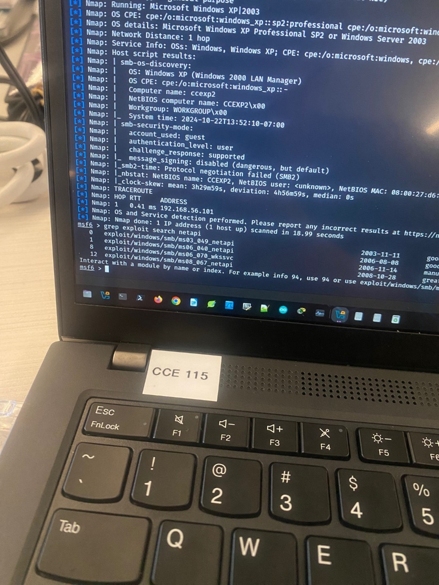
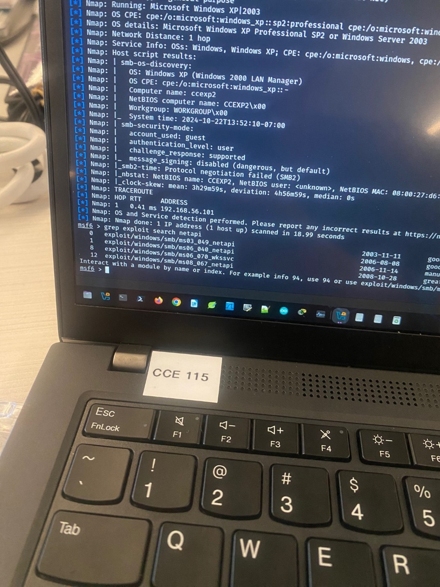

Version 2.0 · Updated Nov 3 2024
This penetration test identified vulnerabilities within a controlled lab environment simulating real-world systems. Key findings included outdated software, weak encryption algorithms, and misconfigurations. Exploitations demonstrated unauthorized access via known vulnerabilities, culminating in potential data exfiltration and persistent access using custom payloads.
Mitigation strategies include regular patching, upgrading end-of-life operating systems, restricting SSH/SMB services, and using encryption best practices. Following these recommendations reduces the attack surface and strengthens organizational security posture.
| Version | Date | Author | Changes |
|---|---|---|---|
| 1.0 | 10/04/2024 | Brady Reid | Added Passive Corporate Recon OSINT |
| 1.2 | 10/05/2024 | Brady Reid | Added Automating Information Recon |
| 1.3 | 10/12/2024 | Brady Reid | Added Nmap Scan |
| 1.4 | 10/20/2024 | Brady Reid | Added OpenVAS Scan |
| 1.5 | 10/29/2024 | Brady Reid | Added Metasploit |
| 2.0 | 11/03/2024 | Brady Reid | Added Custom Payload Summary |
Summary: Publicly available data for “Discount Tire” was collected using MXToolbox, Whois, LinkedIn, Sublist3r, and others. Domain records, emails, subdomains, and metadata were identified.
Recommendations: Use social media carefully; limit personal/company data exposure. Avoid posting internal information publicly. Regularly review privacy settings and policies for data leaks.


Summary: Tools such as SpiderFoot, DNSEnum, Metagoofil, and Sherlock were employed to identify deeper intelligence sources and metadata from public resources.
Recommendations: Regularly audit and remove old or sensitive data from public-facing sites. Use automated tools to self-assess exposure. Review social media for username leaks.
 

Summary: Nmap scans identified open ports, running services, and OS fingerprints across two VM targets. Outdated services (FTP, HTTP, MySQL) were detected on legacy Windows OS.
Recommendations: Upgrade Apache from v2.2.8; restrict SSH (port 22) to trusted IPs. Upgrade from Windows XP/Server 2003 to supported OS. Disable SMB ports (139/445) when unnecessary.
Summary: OpenVAS revealed outdated encryption protocols, EOL operating systems, and clear-text transmissions.
Remediation: Upgrade/replace EOL OS, reconfigure weak SSH algorithms, enforce HTTPS, disable TCP/ICMP timestamps, and implement encryption best practices.
Summary: Using Metasploit v6.4.20-dev, exploits such as Drupalgeddon2, Kitrap0d, and Samba user map script achieved remote access and privilege escalation. A custom MSFVenom payload (chrome.exe) maintained persistence via reverse TCP.
Recommendations: Apply security updates, harden firewall rules, enforce least privilege, and disable dangerous SMB shares. Continuous monitoring is advised.
This engagement revealed multiple weaknesses, including public data exposure, vulnerable services, and outdated systems. Implementing layered defenses, regular patching, and strict access controls significantly reduces risk. A follow-up validation test is recommended to confirm mitigations.